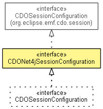

org.eclipse.emf.cdo.net4j
Interface CDONet4jSessionConfiguration
- All Superinterfaces:
- CDOSessionConfiguration, INotifier
- All Known Subinterfaces:
- CDOSessionConfiguration, FailoverCDOSessionConfiguration, ReconnectingCDOSessionConfiguration, RecoveringCDOSessionConfiguration
- public interface CDONet4jSessionConfiguration
- extends CDOSessionConfiguration

Configures and opens new Net4j-specific CDO sessions.
- Since:
- 4.1
- No Implement
- This interface is not intended to be implemented by clients.
- No Extend
- This interface is not intended to be extended by clients.
| Methods inherited from interface org.eclipse.emf.cdo.session.CDOSessionConfiguration |
getAuthenticator, getCredentialsProvider, getExceptionHandler, getFetchRuleManager, getIDGenerator, getLockNotificationMode, getPassiveUpdateMode, getUserID, isActivateOnOpen, isPassiveUpdateEnabled, isSessionOpen, setActivateOnOpen, setCredentialsProvider, setExceptionHandler, setFetchRuleManager, setIDGenerator, setLockNotificationMode, setPassiveUpdateEnabled, setPassiveUpdateMode, setUserID |
getRepositoryName
String getRepositoryName()
setRepositoryName
void setRepositoryName(String repositoryName)
getConnector
IConnector getConnector()
setConnector
void setConnector(IConnector connector)
getStreamWrapper
IStreamWrapper getStreamWrapper()
setStreamWrapper
void setStreamWrapper(IStreamWrapper streamWrapper)
getSignalTimeout
long getSignalTimeout()
- Since:
- 4.0
setSignalTimeout
void setSignalTimeout(long timeout)
- Since:
- 4.0
getPackageRegistry
CDOPackageRegistry getPackageRegistry()
- See Also:
CDOSession.getPackageRegistry()
setPackageRegistry
void setPackageRegistry(CDOPackageRegistry packageRegistry)
- A special package registry can be set before the session is opened and can not be changed thereafter.
- See Also:
CDOSession.getPackageRegistry()
getBranchManager
CDOBranchManager getBranchManager()
- Specified by:
getBranchManager in interface CDOSessionConfiguration
setBranchManager
void setBranchManager(CDOBranchManager branchManager)
- Specified by:
setBranchManager in interface CDOSessionConfiguration
getRevisionManager
CDORevisionManager getRevisionManager()
- Since:
- 3.0
- See Also:
CDOSession.getRevisionManager()
setRevisionManager
void setRevisionManager(CDORevisionManager revisionManager)
- Since:
- 3.0
- See Also:
CDOSession.getRevisionManager()
openNet4jSession
CDONet4jSession openNet4jSession()
- Since:
- 4.1
openSession
@Deprecated
CDOSession openSession()
- Deprecated. Use
openNet4jSession().
- Description copied from interface:
CDOSessionConfiguration
- Opens the session for this configuration. Once the session is openend this method always returns the same session
instance. Therefore it is impossible to change this configuration while the session is open.
- Specified by:
openSession in interface CDOSessionConfiguration
Copyright (c) 2011, 2012 Eike Stepper (Berlin, Germany) and others.